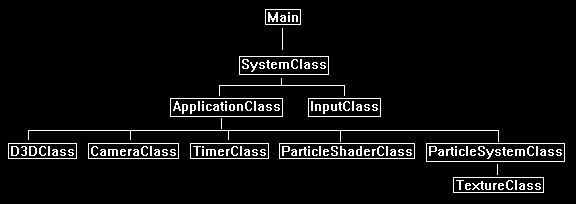

In this tutorial we will cover how to implement animated particles using DirectX 11, HLSL, and C++.
We will be combining the information from tutorial 38: Particle Systems, and from tutorial 33: Fire.
There are two parts required to implement animated particles.
The first part is the animation within the particle system.
And the second part is the animation within the pixel shader for each individual particle.
We will discuss the particle system animation first.
In tutorial 38: Particle Systems we simply had the particles fall downwards.
However, most particle systems require more advanced animations to assist in creating a particular effect.
For example, an explosion would require fast particles moving in random directions from a central emission point.
The explosion particles would also have gravity affecting them and the acceleration would have a sharp decline after being emitted originally.
And so, you can see the particle system animation plays a crucial role in creating the desired effect.
The second part of animating particles was demonstrating in tutorial 33: Fire.
In that tutorial we used a single quad and achieved an animated fire effect that looked very realistic using a RGB texture, an alpha map, and an alpha mask.
However, the difference in this tutorial is that we will combine a large number of particles that are all being individually animated at different rates.
This will then create a combined effect.
For example, we could now just do small flames licks on each particle, but then combine all of them using the particle system to create the same kind of fire effect we had in tutorial 33.
The difference being though is that this is a far more extensible solution that can create millions of different effects.
For this tutorial we will demonstrate animated particles by creating an illuminated looking blue smoke effect that moves in a circular pattern.
To implement this blue smoke effect, we will first start with the particle system and create a particle quad that moves in a circle.
In the case of this tutorial, we will use 400 quads and emit them around in a circle shape using the circle formula.
The resulting animated particle system will then look like the following:

Then for the second part of the animated particles effect we will use a single RGB texture with an alpha map.
The alpha map will be used to manipulate the RGB portion of the texture each frame.
So just like the fire tutorial the alpha map will scroll each frame and be used to expose or remove portions of the RGB texture to create the animated color portion of the particle.
We won't go as far as using multiple alpha maps, distortion, and other things discussed in the fire tutorial, but I will leave that for you to add later.
Now to create the texture I have used terrain height maps to create the RGB portion and the alpha portion as seen here:

Using alpha maps that have lots of interesting black to white transitions are what makes up the majority of the animation for these particles.
Multiplying different scaled alpha maps can also do the same thing.
The final part of the technique is that we scroll the alpha portion of the texture differently for every single particle.
That way all 400 particles will be animating slightly differently which hides the repetition and creates a larger combined effect from many different and unique particles.
For this tutorial we will create the following effect (which looks way better in motion):

One thing you will notice is that the overlapping particles do not add up to create a cumulative shimmering white effect.
The reason is that we will not be using additive blending in this tutorial like we did in the previous particle tutorial.
We will instead be using premultiplied alpha which results in the actual RGB colors of the texture being displayed and allows us to maintain the specific color effect we are looking for.
Now when you are animating particles there will be a lot of experimentation required to get a good-looking effect.
One of the ways to speed up testing changes is that we put all of our particle system variables in a text file.
Then we modify the rendering program to dynamically read that text file while the program is running.
This way we can change a parameter in the text file and then click a button to see the change live without stopping the program.
For this tutorial I will put the parameters for this effect into a text file called particle_config_01.txt.
And whenever the R key is pressed on the keyboard it will reload the newly saved file and apply the updated parameters live.
particle_config_01.txt
Particle Count: 400
Particles Per Second: 100.0
Particle Size: 0.5
Particle Life Time: 2.0
Texture 1: ../Engine/data/ice003.tga
Framework
We will use the same framework as we did in the particle systems tutorial.

We will start the code section by looking at the modified particle system.
We have made changes to it that feed into the particle shader, so reviewing the particle system first will make the particle shader changes easier to understand.
Particlesystemclass.h
The ParticleSystemClass has been changed entirely to support animated particles.
Since each particle needs to animate independently, we need to change how the particle system is working.
////////////////////////////////////////////////////////////////////////////////
// Filename: particlesystemclass.h
////////////////////////////////////////////////////////////////////////////////
#ifndef _PARTICLESYSTEMCLASS_H_
#define _PARTICLESYSTEMCLASS_H_
//////////////
// INCLUDES //
//////////////
#include <d3d11.h>
#include <directxmath.h>
#include <fstream>
using namespace DirectX;
using namespace std;
///////////////////////
// MY CLASS INCLUDES //
///////////////////////
#include "textureclass.h"
////////////////////////////////////////////////////////////////////////////////
// Class name: ParticleSystemClass
////////////////////////////////////////////////////////////////////////////////
class ParticleSystemClass
{
private:
The VertexType has been modified to carry the information needed for each particle to animate individually.
We store that information in data1.
If you need even more information, you can add data2, data3, and so forth.
struct VertexType
{
XMFLOAT3 position;
XMFLOAT2 texture;
XMFLOAT4 data1;
};
The ParticleType has also changed to support the individual animation information that each particle will need to maintain about its current state.
struct ParticleType
{
float positionX, positionY, positionZ;
bool active;
float lifeTime;
float scroll1X, scroll1Y;
};
public:
ParticleSystemClass();
ParticleSystemClass(const ParticleSystemClass&);
~ParticleSystemClass();
bool Initialize(ID3D11Device*, ID3D11DeviceContext*, char*);
void Shutdown();
bool Frame(float, ID3D11DeviceContext*);
void Render(ID3D11DeviceContext*);
ID3D11ShaderResourceView* GetTexture();
int GetIndexCount();
We have added a Reload function so that the particle system can dynamically load its settings from the config file and apply the settings real time.
bool Reload(ID3D11Device*, ID3D11DeviceContext*);
private:
bool LoadParticleConfiguration();
bool InitializeParticleSystem();
void ShutdownParticleSystem();
void EmitParticles(float);
void UpdateParticles(float);
void KillParticles();
void CopyParticle(int, int);
bool InitializeBuffers(ID3D11Device*);
void ShutdownBuffers();
void RenderBuffers(ID3D11DeviceContext*);
bool UpdateBuffers(ID3D11DeviceContext*);
bool LoadTexture(ID3D11Device*, ID3D11DeviceContext*);
void ReleaseTexture();
private:
ID3D11Buffer* m_vertexBuffer, * m_indexBuffer;
ParticleType* m_particleList;
VertexType* m_vertices;
TextureClass* m_Texture;
int m_vertexCount, m_indexCount;
We have a number of new private member variables for the updated particle system.
char m_configFilename[256];
int m_maxParticles;
float m_particlesPerSecond;
float m_particleSize;
float m_particleLifeTime;
char m_textureFilename[256];
float m_accumulatedTime;
int m_currentParticleCount;
};
#endif
Particlesystemclass.cpp
////////////////////////////////////////////////////////////////////////////////
// Filename: particlesystemclass.cpp
////////////////////////////////////////////////////////////////////////////////
#include "particlesystemclass.h"
ParticleSystemClass::ParticleSystemClass()
{
m_vertexBuffer = 0;
m_indexBuffer = 0;
m_particleList = 0;
m_vertices = 0;
m_Texture = 0;
}
ParticleSystemClass::ParticleSystemClass(const ParticleSystemClass& other)
{
}
ParticleSystemClass::~ParticleSystemClass()
{
}
bool ParticleSystemClass::Initialize(ID3D11Device* device, ID3D11DeviceContext* deviceContext, char* configFilename)
{
bool result;
The Initialize function will now start by storing the config file's name and loading the configuration from file instead of the hard coded variables from the previous particle tutorial.
// Keep a copy of the config file name for loading the particle configuration, and also for mid-app reloading.
strcpy_s(m_configFilename, configFilename);
// Load the particle configuration file to set all the particle parameters for rendering.
result = LoadParticleConfiguration();
if(!result)
{
return false;
}
// Initialize the particle system.
result = InitializeParticleSystem();
if(!result)
{
return false;
}
// Create the buffers that will be used to render the particles with.
result = InitializeBuffers(device);
if(!result)
{
return false;
}
// Load the texture that is used for the particles.
result = LoadTexture(device, deviceContext);
if(!result)
{
return false;
}
return true;
}
void ParticleSystemClass::Shutdown()
{
// Release the texture used for the particles.
ReleaseTexture();
// Release the buffers.
ShutdownBuffers();
// Release the particle system.
ShutdownParticleSystem();
return;
}
bool ParticleSystemClass::Frame(float frameTime, ID3D11DeviceContext* deviceContext)
{
bool result;
// Release old particles.
KillParticles();
// Emit new particles.
EmitParticles(frameTime);
// Update the position of the particles.
UpdateParticles(frameTime);
// Update the dynamic vertex buffer with the new position of each particle.
result = UpdateBuffers(deviceContext);
if(!result)
{
return false;
}
return true;
}
void ParticleSystemClass::Render(ID3D11DeviceContext* deviceContext)
{
// Put the vertex and index buffers on the graphics pipeline to prepare them for drawing.
RenderBuffers(deviceContext);
return;
}
ID3D11ShaderResourceView* ParticleSystemClass::GetTexture()
{
return m_Texture->GetTexture();
}
int ParticleSystemClass::GetIndexCount()
{
return m_indexCount;
}
The new LoadParticleConfiguration function will load all the particle parameters from a text file.
This makes it easy to define parameters and swap different configuration files to try different effects.
bool ParticleSystemClass::LoadParticleConfiguration()
{
ifstream fin;
int i;
char input;
// Open the particle configuration file.
fin.open(m_configFilename);
if(fin.fail())
{
return false;
}
// Read up to the value of the particle count and read it in.
fin.get(input);
while(input != ':')
{
fin.get(input);
}
fin >> m_maxParticles;
// Read up to the value of the particle per second and read it in.
fin.get(input);
while(input != ':')
{
fin.get(input);
}
fin >> m_particlesPerSecond;
// Read up to the value of the particle size and read it in.
fin.get(input);
while(input != ':')
{
fin.get(input);
}
fin >> m_particleSize;
// Read up to the value of the particle life time and read it in.
fin.get(input);
while(input != ':')
{
fin.get(input);
}
fin >> m_particleLifeTime;
// Read up to the filename of the first texture and read it in.
fin.get(input);
while(input != ':')
{
fin.get(input);
}
fin.get(input);
i=0;
fin.get(input);
while(input != '\n')
{
m_textureFilename[i] = input;
i++;
fin.get(input);
}
m_textureFilename[i] = '\0';
// Close the file.
fin.close();
return true;
}
bool ParticleSystemClass::InitializeParticleSystem()
{
int i;
When we build our particle list, we now use parameters from the config file such as m_maxParticles.
// Create the particle list.
m_particleList = new ParticleType[m_maxParticles];
// Initialize the particle list.
for(i=0; i<m_maxParticles; i++)
{
m_particleList[i].active = false;
}
// Clear the initial accumulated time for the particle per second emission rate.
m_accumulatedTime = 0.0f;
// Initialize the current particle count to zero since none are emitted yet.
m_currentParticleCount = 0;
return true;
}
void ParticleSystemClass::ShutdownParticleSystem()
{
// Release the particle list.
if(m_particleList)
{
delete [] m_particleList;
m_particleList = 0;
}
return;
}
void ParticleSystemClass::EmitParticles(float frameTime)
{
float centerX, centerY, radius, positionX, positionY, positionZ, scroll1X, scroll1Y;
float emitterOrigin[3];
int index, i, j;
bool emitParticle, found;
static float angle = 0.0f;
The EmitParticles function has been changed to emit particles in a circle pattern.
We use the circle formula paired with the frame time to emit particles around in a circle.
// Set the center of the circle.
centerX = 0.0f;
centerY = 0.0f;
// Set the radius of the circle.
radius = 1.0f;
// Update the angle each frame to move any generated particle origin position along the circumference of the circle each frame.
angle += frameTime * 2.0f;
// Calculate the origin that the particle should be emitted on the circle's circumference.
emitterOrigin[0] = centerX + radius * sin(angle);
emitterOrigin[1] = centerY + radius * cos(angle);
emitterOrigin[2] = 0.0f;
// Increment the accumulated time that is used to determine when to emit a particle next.
m_accumulatedTime += frameTime;
// Set emit particle to false for now.
emitParticle = false;
// Check if it is time to emit a new particle or not.
if(m_accumulatedTime > (1.0f / m_particlesPerSecond))
{
m_accumulatedTime = 0.0f;
emitParticle = true;
}
// If there are particles to emit then emit one per frame.
if((emitParticle == true) && (m_currentParticleCount < (m_maxParticles - 1)))
{
m_currentParticleCount++;
When we emit particles, we use the emitter origin which will be placed somewhere on the circumference of the circle based on the frame time and angle.
positionX = emitterOrigin[0];
positionY = emitterOrigin[1];
positionZ = emitterOrigin[2];
Also, when we emit a particle, we give it a random scroll value to sample the alpha map from.
This provides a huge variation in appearance.
And it also hides the repetition since each particle will be sampling from a different scrolling location.
// Create a random X scrolling positive value.
scroll1X = (((float)rand() - (float)rand())/RAND_MAX);
if(scroll1X < 0.0f)
{
scroll1X *= -1.0f;
}
// Set the Y scroll to the same value.
scroll1Y = scroll1X;
// Now since the particles need to be rendered from back to front for blending we have to sort the particle array.
// We will sort using Z depth so we need to find where in the list the particle should be inserted.
index = 0;
found = false;
while(!found)
{
if((m_particleList[index].active == false) || (m_particleList[index].positionZ < positionZ))
{
found = true;
}
else
{
index++;
}
}
// Now that we know the location to insert into we need to copy the array over by one position from the index to make room for the new particle.
i = m_currentParticleCount;
j = i - 1;
while(i != index)
{
CopyParticle(i, j);
i--;
j--;
}
The new particle will use all the new parameters for this tutorial such as particle life time and scrolling.
// Now insert the newly emitted particle into the particle array in the correct depth order.
m_particleList[index].positionX = positionX;
m_particleList[index].positionY = positionY;
m_particleList[index].positionZ = positionZ;
m_particleList[index].active = true;
m_particleList[index].lifeTime = m_particleLifeTime;
m_particleList[index].scroll1X = scroll1X;
m_particleList[index].scroll1Y = scroll1Y;
}
return;
}
The UpdateParticles function has also changed.
We no longer update the position, as all particles will stay where they are.
But we instead update the life time of the particle to fade it out further and further each frame.
We also update the scrolling each frame for each particle to create the individualized animation effect.
void ParticleSystemClass::UpdateParticles(float frameTime)
{
int i;
// Each frame we update all the particles using the frame time.
for(i=0; i<m_currentParticleCount; i++)
{
// Negate the life time of the particle each frame.
m_particleList[i].lifeTime = m_particleList[i].lifeTime - frameTime;
// Update the scrolling position of each particle each frame.
m_particleList[i].scroll1X = m_particleList[i].scroll1X + (frameTime * 0.5f);
if(m_particleList[i].scroll1X > 1.0f)
{
m_particleList[i].scroll1X -= 1.0f;
}
m_particleList[i].scroll1Y = m_particleList[i].scroll1Y + (frameTime * 0.5f);
if(m_particleList[i].scroll1Y > 1.0f)
{
m_particleList[i].scroll1Y -= 1.0f;
}
}
return;
}
The KillParticles now removes particles based on the life time instead of the position.
Since life time is also used to fade out particles over time in the shader, they will be fully faded out by the time the life time reaches zero.
void ParticleSystemClass::KillParticles()
{
int i, j;
// Kill all the particles that have a life time that is now zero.
for(i=0; i<m_maxParticles; i++)
{
if((m_particleList[i].active == true) && (m_particleList[i].lifeTime <= 0.0f))
{
m_particleList[i].active = false;
m_currentParticleCount--;
// Now shift all the live particles back up the array to erase the destroyed particle and keep the array sorted correctly.
for(j=i; j<m_maxParticles-1; j++)
{
CopyParticle(j, j+1);
}
}
}
return;
}
I have added a CopyParticle function since there is always a lot of copying particles.
And instead of duplicating this code in multiple places, you now have a single function to do the work.
This also removes the possibility of bugs when you add or remove particle parameters as there is now only a single location to modify the parameters that get copied.
void ParticleSystemClass::CopyParticle(int dst, int src)
{
m_particleList[dst].positionX = m_particleList[src].positionX;
m_particleList[dst].positionY = m_particleList[src].positionY;
m_particleList[dst].positionZ = m_particleList[src].positionZ;
m_particleList[dst].active = m_particleList[src].active;
m_particleList[dst].lifeTime = m_particleList[src].lifeTime;
m_particleList[dst].scroll1X = m_particleList[src].scroll1X;
m_particleList[dst].scroll1Y = m_particleList[src].scroll1Y;
return;
}
bool ParticleSystemClass::InitializeBuffers(ID3D11Device* device)
{
unsigned long* indices;
int i;
D3D11_BUFFER_DESC vertexBufferDesc, indexBufferDesc;
D3D11_SUBRESOURCE_DATA vertexData, indexData;
HRESULT result;
// Set the maximum number of vertices in the vertex array.
m_vertexCount = m_maxParticles * 6;
// Set the maximum number of indices in the index array.
m_indexCount = m_vertexCount;
// Create the vertex array for the particles that will be rendered.
m_vertices = new VertexType[m_vertexCount];
// Create the index array.
indices = new unsigned long[m_indexCount];
// Initialize vertex array to zeros at first.
memset(m_vertices, 0, (sizeof(VertexType) * m_vertexCount));
// Initialize the index array.
for(i=0; i<m_indexCount; i++)
{
indices[i] = i;
}
// Set up the description of the dynamic vertex buffer.
vertexBufferDesc.Usage = D3D11_USAGE_DYNAMIC;
vertexBufferDesc.ByteWidth = sizeof(VertexType) * m_vertexCount;
vertexBufferDesc.BindFlags = D3D11_BIND_VERTEX_BUFFER;
vertexBufferDesc.CPUAccessFlags = D3D11_CPU_ACCESS_WRITE;
vertexBufferDesc.MiscFlags = 0;
vertexBufferDesc.StructureByteStride = 0;
// Give the subresource structure a pointer to the vertex data.
vertexData.pSysMem = m_vertices;
vertexData.SysMemPitch = 0;
vertexData.SysMemSlicePitch = 0;
// Now finally create the vertex buffer.
result = device->CreateBuffer(&vertexBufferDesc, &vertexData, &m_vertexBuffer);
if(FAILED(result))
{
return false;
}
// Set up the description of the static index buffer.
indexBufferDesc.Usage = D3D11_USAGE_DEFAULT;
indexBufferDesc.ByteWidth = sizeof(unsigned long) * m_indexCount;
indexBufferDesc.BindFlags = D3D11_BIND_INDEX_BUFFER;
indexBufferDesc.CPUAccessFlags = 0;
indexBufferDesc.MiscFlags = 0;
indexBufferDesc.StructureByteStride = 0;
// Give the subresource structure a pointer to the index data.
indexData.pSysMem = indices;
indexData.SysMemPitch = 0;
indexData.SysMemSlicePitch = 0;
// Create the index buffer.
result = device->CreateBuffer(&indexBufferDesc, &indexData, &m_indexBuffer);
if(FAILED(result))
{
return false;
}
// Release just the index array since it is no longer needed.
delete [] indices;
indices = 0;
return true;
}
void ParticleSystemClass::ShutdownBuffers()
{
// Release the index buffer.
if(m_indexBuffer)
{
m_indexBuffer->Release();
m_indexBuffer = 0;
}
// Release the vertex buffer.
if(m_vertexBuffer)
{
m_vertexBuffer->Release();
m_vertexBuffer = 0;
}
// Release the vertices.
if(m_vertices)
{
delete [] m_vertices;
m_vertices = 0;
}
return;
}
void ParticleSystemClass::RenderBuffers(ID3D11DeviceContext* deviceContext)
{
unsigned int stride;
unsigned int offset;
// Set vertex buffer stride and offset.
stride = sizeof(VertexType);
offset = 0;
// Set the vertex buffer to active in the input assembler so it can be rendered.
deviceContext->IASetVertexBuffers(0, 1, &m_vertexBuffer, &stride, &offset);
// Set the index buffer to active in the input assembler so it can be rendered.
deviceContext->IASetIndexBuffer(m_indexBuffer, DXGI_FORMAT_R32_UINT, 0);
// Set the type of primitive that should be rendered from this vertex buffer.
deviceContext->IASetPrimitiveTopology(D3D11_PRIMITIVE_TOPOLOGY_TRIANGLELIST);
return;
}
In the UpdateBuffers function we now have a data1 vertex parameter since each particle will now require its own individual scrolling and life time parameters that will be updated each frame.
This is critical in allowing us to have the individual randomized animation for every single particle.
bool ParticleSystemClass::UpdateBuffers(ID3D11DeviceContext* deviceContext)
{
int index, i;
HRESULT result;
D3D11_MAPPED_SUBRESOURCE mappedResource;
VertexType* verticesPtr;
float lifeTime, scroll1X, scroll1Y;
// Initialize vertex array to zeros at first.
memset(m_vertices, 0, (sizeof(VertexType) * m_vertexCount));
// Now build the vertex array from the particle list array. Each particle is a quad made out of two triangles.
index = 0;
for(i=0; i<m_currentParticleCount; i++)
{
// Get the life time and scroll for the current particle. This will be set in the data1 portion of the vertex.
lifeTime = m_particleList[i].lifeTime / m_particleLifeTime;
scroll1X = m_particleList[i].scroll1X;
scroll1Y = m_particleList[i].scroll1Y;
// Bottom left.
m_vertices[index].position = XMFLOAT3(m_particleList[i].positionX - m_particleSize, m_particleList[i].positionY - m_particleSize, m_particleList[i].positionZ);
m_vertices[index].texture = XMFLOAT2(0.0f, 1.0f);
m_vertices[index].data1 = XMFLOAT4(lifeTime, scroll1X, scroll1Y, 1.0f);
index++;
// Top left.
m_vertices[index].position = XMFLOAT3(m_particleList[i].positionX - m_particleSize, m_particleList[i].positionY + m_particleSize, m_particleList[i].positionZ);
m_vertices[index].texture = XMFLOAT2(0.0f, 0.0f);
m_vertices[index].data1 = XMFLOAT4(lifeTime, scroll1X, scroll1Y, 1.0f);
index++;
// Bottom right.
m_vertices[index].position = XMFLOAT3(m_particleList[i].positionX + m_particleSize, m_particleList[i].positionY - m_particleSize, m_particleList[i].positionZ);
m_vertices[index].texture = XMFLOAT2(1.0f, 1.0f);
m_vertices[index].data1 = XMFLOAT4(lifeTime, scroll1X, scroll1Y, 1.0f);
index++;
// Bottom right.
m_vertices[index].position = XMFLOAT3(m_particleList[i].positionX + m_particleSize, m_particleList[i].positionY - m_particleSize, m_particleList[i].positionZ);
m_vertices[index].texture = XMFLOAT2(1.0f, 1.0f);
m_vertices[index].data1 = XMFLOAT4(lifeTime, scroll1X, scroll1Y, 1.0f);
index++;
// Top left.
m_vertices[index].position = XMFLOAT3(m_particleList[i].positionX - m_particleSize, m_particleList[i].positionY + m_particleSize, m_particleList[i].positionZ);
m_vertices[index].texture = XMFLOAT2(0.0f, 0.0f);
m_vertices[index].data1 = XMFLOAT4(lifeTime, scroll1X, scroll1Y, 1.0f);
index++;
// Top right.
m_vertices[index].position = XMFLOAT3(m_particleList[i].positionX + m_particleSize, m_particleList[i].positionY + m_particleSize, m_particleList[i].positionZ);
m_vertices[index].texture = XMFLOAT2(1.0f, 0.0f);
m_vertices[index].data1 = XMFLOAT4(lifeTime, scroll1X, scroll1Y, 1.0f);
index++;
}
// Lock the vertex buffer.
result = deviceContext->Map(m_vertexBuffer, 0, D3D11_MAP_WRITE_DISCARD, 0, &mappedResource);
if(FAILED(result))
{
return false;
}
// Get a pointer to the data in the vertex buffer.
verticesPtr = (VertexType*)mappedResource.pData;
// Copy the data into the vertex buffer.
memcpy(verticesPtr, (void*)m_vertices, (sizeof(VertexType) * m_vertexCount));
// Unlock the vertex buffer.
deviceContext->Unmap(m_vertexBuffer, 0);
return true;
}
bool ParticleSystemClass::LoadTexture(ID3D11Device* device, ID3D11DeviceContext* deviceContext)
{
bool result;
// Create and initialize the texture object.
m_Texture = new TextureClass;
result = m_Texture->Initialize(device, deviceContext, m_textureFilename);
if(!result)
{
return false;
}
return true;
}
void ParticleSystemClass::ReleaseTexture()
{
// Release the texture object.
if(m_Texture)
{
m_Texture->Shutdown();
delete m_Texture;
m_Texture = 0;
}
return;
}
The new Reload function will allow us to shut down and restart the particle system whenever we press the R key.
So, we start and run the program, and then while the program is running, we change and save the config text file, and then press R and reload the entire particle system live.
bool ParticleSystemClass::Reload(ID3D11Device* device, ID3D11DeviceContext* deviceContext)
{
bool result;
// Release all of the data.
Shutdown();
// Re-load all of the data.
result = LoadParticleConfiguration();
if(!result)
{
return false;
}
result = InitializeParticleSystem();
if(!result)
{
return false;
}
result = InitializeBuffers(device);
if(!result)
{
return false;
}
result = LoadTexture(device, deviceContext);
if(!result)
{
return false;
}
return true;
}
Particle.vs
The particle shader has been changed for this tutorial to accommodate animated particles.
////////////////////////////////////////////////////////////////////////////////
// Filename: particle.vs
////////////////////////////////////////////////////////////////////////////////
/////////////
// GLOBALS //
/////////////
cbuffer MatrixBuffer
{
matrix worldMatrix;
matrix viewMatrix;
matrix projectionMatrix;
};
//////////////
// TYPEDEFS //
//////////////
The VertexInputType now receives the life time, and two scrolling floats in the data1 float4.
struct VertexInputType
{
float4 position : POSITION;
float2 tex : TEXCOORD0;
float4 data1 : TEXCOORD1;
};
We send out data1 and a newly created texCoords1 in the PixelInputType to the pixel shader.
struct PixelInputType
{
float4 position : SV_POSITION;
float2 tex : TEXCOORD0;
float4 data1 : TEXCOORD1;
float2 texCoords1 : TEXCOORD2;
};
////////////////////////////////////////////////////////////////////////////////
// Vertex Shader
////////////////////////////////////////////////////////////////////////////////
PixelInputType ParticleVertexShader(VertexInputType input)
{
PixelInputType output;
float scroll1X, scroll1Y;
// Change the position vector to be 4 units for proper matrix calculations.
input.position.w = 1.0f;
// Calculate the position of the vertex against the world, view, and projection matrices.
output.position = mul(input.position, worldMatrix);
output.position = mul(output.position, viewMatrix);
output.position = mul(output.position, projectionMatrix);
// Store the texture coordinates for the pixel shader.
output.tex = input.tex;
Here we are sending the data1 float4 to the pixel shader. Although we only need the lifeTime portion.
// Store the particle data for the pixel shader.
output.data1 = input.data1;
Just like the fire shader we get the scrolling values and then create a new set of texture sampling coordinates for the pixel shader.
These are stored in texCoords1.
The main difference from the fire shader is that the scrolling is per particle now, and not a global for all particles in the shader.
So, we will now have a unique scroll for every single particle.
// Get the scrolling values from the data1.yz portion of the vertex input data.
scroll1X = input.data1.y;
scroll1Y = input.data1.z;
// Calculate the first texture scroll speed texture sampling coordinates.
output.texCoords1.x = input.tex.x - scroll1X;
output.texCoords1.y = input.tex.y + scroll1Y;
return output;
}
Particle.ps
////////////////////////////////////////////////////////////////////////////////
// Filename: particle.ps
////////////////////////////////////////////////////////////////////////////////
/////////////
// GLOBALS //
/////////////
Texture2D shaderTexture : register(t0);
SamplerState SampleTypeWrap : register(s0);
//////////////
// TYPEDEFS //
//////////////
struct PixelInputType
{
float4 position : SV_POSITION;
float2 tex : TEXCOORD0;
float4 data1 : TEXCOORD1;
float2 texCoords1 : TEXCOORD2;
};
////////////////////////////////////////////////////////////////////////////////
// Pixel Shader
////////////////////////////////////////////////////////////////////////////////
float4 ParticlePixelShader(PixelInputType input) : SV_TARGET
{
float4 textureColor;
float alpha;
float intensity;
Although we are using a single texture, we will sample the RGB with input.tex, and the alpha portion with input.texCoords1.
This way the RGB stays put, and the alpha will scroll giving us a unique looking particle.
Also, we will need to use a wrap sampler.
// Sample the pixel color from the texture using the sampler at this texture coordinate location.
textureColor = shaderTexture.Sample(SampleTypeWrap, input.tex);
// Sample the alpha value using the translated texture coordinates instead of the regular coordinates.
alpha = shaderTexture.Sample(SampleTypeWrap, input.texCoords1).a;
Here we combine the RGB and the alpha to create the animated result.
// Modify the color based on the scrolling alpha values.
textureColor.rgb = textureColor.rgb * alpha;
One extra step is to get the life time out of data1 and use it as the intensity of the particle.
This way as the particle gets older, it will fade out gradually.
// Get the intensity value from the life time of the particle.
intensity = input.data1.r;
// As the particle gets older use the life time as intensity to fade out the particle.
textureColor.rgb = textureColor.rgb * intensity;
// Manually set the alpha.
textureColor.a = 1.0f;
return textureColor;
}
Particleshaderclass.h
////////////////////////////////////////////////////////////////////////////////
// Filename: particleshaderclass.h
////////////////////////////////////////////////////////////////////////////////
#ifndef _PARTICLESHADERCLASS_H_
#define _PARTICLESHADERCLASS_H_
//////////////
// INCLUDES //
//////////////
#include <d3d11.h>
#include <d3dcompiler.h>
#include <directxmath.h>
#include <fstream>
using namespace DirectX;
using namespace std;
////////////////////////////////////////////////////////////////////////////////
// Class name: ParticleShaderClass
////////////////////////////////////////////////////////////////////////////////
class ParticleShaderClass
{
private:
struct MatrixBufferType
{
XMMATRIX world;
XMMATRIX view;
XMMATRIX projection;
};
public:
ParticleShaderClass();
ParticleShaderClass(const ParticleShaderClass&);
~ParticleShaderClass();
bool Initialize(ID3D11Device*, HWND);
void Shutdown();
bool Render(ID3D11DeviceContext*, int, XMMATRIX, XMMATRIX, XMMATRIX, ID3D11ShaderResourceView*);
private:
bool InitializeShader(ID3D11Device*, HWND, WCHAR*, WCHAR*);
void ShutdownShader();
void OutputShaderErrorMessage(ID3D10Blob*, HWND, WCHAR*);
bool SetShaderParameters(ID3D11DeviceContext*, XMMATRIX, XMMATRIX, XMMATRIX, ID3D11ShaderResourceView*);
void RenderShader(ID3D11DeviceContext*, int);
private:
ID3D11VertexShader* m_vertexShader;
ID3D11PixelShader* m_pixelShader;
ID3D11InputLayout* m_layout;
ID3D11Buffer* m_matrixBuffer;
ID3D11SamplerState* m_sampleStateWrap;
};
#endif
Particleshaderclass.cpp
////////////////////////////////////////////////////////////////////////////////
// Filename: particleshaderclass.cpp
////////////////////////////////////////////////////////////////////////////////
#include "particleshaderclass.h"
ParticleShaderClass::ParticleShaderClass()
{
m_vertexShader = 0;
m_pixelShader = 0;
m_layout = 0;
m_matrixBuffer = 0;
m_sampleStateWrap = 0;
}
ParticleShaderClass::ParticleShaderClass(const ParticleShaderClass& other)
{
}
ParticleShaderClass::~ParticleShaderClass()
{
}
bool ParticleShaderClass::Initialize(ID3D11Device* device, HWND hwnd)
{
wchar_t vsFilename[128], psFilename[128];
int error;
bool result;
// Set the filename of the vertex shader.
error = wcscpy_s(vsFilename, 128, L"../Engine/particle.vs");
if(error != 0)
{
return false;
}
// Set the filename of the pixel shader.
error = wcscpy_s(psFilename, 128, L"../Engine/particle.ps");
if(error != 0)
{
return false;
}
// Initialize the vertex and pixel shaders.
result = InitializeShader(device, hwnd, vsFilename, psFilename);
if(!result)
{
return false;
}
return true;
}
void ParticleShaderClass::Shutdown()
{
// Shutdown the vertex and pixel shaders as well as the related objects.
ShutdownShader();
return;
}
bool ParticleShaderClass::Render(ID3D11DeviceContext* deviceContext, int indexCount, XMMATRIX worldMatrix, XMMATRIX viewMatrix, XMMATRIX projectionMatrix,
ID3D11ShaderResourceView* texture)
{
bool result;
// Set the shader parameters that it will use for rendering.
result = SetShaderParameters(deviceContext, worldMatrix, viewMatrix, projectionMatrix, texture);
if(!result)
{
return false;
}
// Now render the prepared buffers with the shader.
RenderShader(deviceContext, indexCount);
return true;
}
bool ParticleShaderClass::InitializeShader(ID3D11Device* device, HWND hwnd, WCHAR* vsFilename, WCHAR* psFilename)
{
HRESULT result;
ID3D10Blob* errorMessage;
ID3D10Blob* vertexShaderBuffer;
ID3D10Blob* pixelShaderBuffer;
D3D11_INPUT_ELEMENT_DESC polygonLayout[3];
unsigned int numElements;
D3D11_BUFFER_DESC matrixBufferDesc;
D3D11_SAMPLER_DESC samplerDesc;
// Initialize the pointers this function will use to null.
errorMessage = 0;
vertexShaderBuffer = 0;
pixelShaderBuffer = 0;
// Compile the vertex shader code.
result = D3DCompileFromFile(vsFilename, NULL, NULL, "ParticleVertexShader", "vs_5_0", D3D10_SHADER_ENABLE_STRICTNESS, 0,
&vertexShaderBuffer, &errorMessage);
if(FAILED(result))
{
// If the shader failed to compile it should have writen something to the error message.
if(errorMessage)
{
OutputShaderErrorMessage(errorMessage, hwnd, vsFilename);
}
// If there was nothing in the error message then it simply could not find the shader file itself.
else
{
MessageBox(hwnd, vsFilename, L"Missing Shader File", MB_OK);
}
return false;
}
// Compile the pixel shader code.
result = D3DCompileFromFile(psFilename, NULL, NULL, "ParticlePixelShader", "ps_5_0", D3D10_SHADER_ENABLE_STRICTNESS, 0,
&pixelShaderBuffer, &errorMessage);
if(FAILED(result))
{
// If the shader failed to compile it should have writen something to the error message.
if(errorMessage)
{
OutputShaderErrorMessage(errorMessage, hwnd, psFilename);
}
// If there was nothing in the error message then it simply could not find the file itself.
else
{
MessageBox(hwnd, psFilename, L"Missing Shader File", MB_OK);
}
return false;
}
// Create the vertex shader from the buffer.
result = device->CreateVertexShader(vertexShaderBuffer->GetBufferPointer(), vertexShaderBuffer->GetBufferSize(), NULL, &m_vertexShader);
if(FAILED(result))
{
return false;
}
// Create the pixel shader from the buffer.
result = device->CreatePixelShader(pixelShaderBuffer->GetBufferPointer(), pixelShaderBuffer->GetBufferSize(), NULL, &m_pixelShader);
if(FAILED(result))
{
return false;
}
// Create the vertex input layout description.
polygonLayout[0].SemanticName = "POSITION";
polygonLayout[0].SemanticIndex = 0;
polygonLayout[0].Format = DXGI_FORMAT_R32G32B32_FLOAT;
polygonLayout[0].InputSlot = 0;
polygonLayout[0].AlignedByteOffset = 0;
polygonLayout[0].InputSlotClass = D3D11_INPUT_PER_VERTEX_DATA;
polygonLayout[0].InstanceDataStepRate = 0;
polygonLayout[1].SemanticName = "TEXCOORD";
polygonLayout[1].SemanticIndex = 0;
polygonLayout[1].Format = DXGI_FORMAT_R32G32_FLOAT;
polygonLayout[1].InputSlot = 0;
polygonLayout[1].AlignedByteOffset = D3D11_APPEND_ALIGNED_ELEMENT;
polygonLayout[1].InputSlotClass = D3D11_INPUT_PER_VERTEX_DATA;
polygonLayout[1].InstanceDataStepRate = 0;
The one major change in the particle shader is that we use a second TEXCOORD in our polygon layout.
This will hold the data1 float4 which will have a life time, and two scrolling floats for each particle.
Note that we need to set the SemanticIndex to 1 since we already have a TEXCOORD above using 0 for the regular texture coordinates.
polygonLayout[2].SemanticName = "TEXCOORD";
polygonLayout[2].SemanticIndex = 1;
polygonLayout[2].Format = DXGI_FORMAT_R32G32B32A32_FLOAT;
polygonLayout[2].InputSlot = 0;
polygonLayout[2].AlignedByteOffset = D3D11_APPEND_ALIGNED_ELEMENT;
polygonLayout[2].InputSlotClass = D3D11_INPUT_PER_VERTEX_DATA;
polygonLayout[2].InstanceDataStepRate = 0;
// Get a count of the elements in the layout.
numElements = sizeof(polygonLayout) / sizeof(polygonLayout[0]);
// Create the vertex input layout.
result = device->CreateInputLayout(polygonLayout, numElements, vertexShaderBuffer->GetBufferPointer(),
vertexShaderBuffer->GetBufferSize(), &m_layout);
if(FAILED(result))
{
return false;
}
// Release the vertex shader buffer and pixel shader buffer since they are no longer needed.
vertexShaderBuffer->Release();
vertexShaderBuffer = 0;
pixelShaderBuffer->Release();
pixelShaderBuffer = 0;
// Setup the description of the dynamic matrix constant buffer that is in the vertex shader.
matrixBufferDesc.Usage = D3D11_USAGE_DYNAMIC;
matrixBufferDesc.ByteWidth = sizeof(MatrixBufferType);
matrixBufferDesc.BindFlags = D3D11_BIND_CONSTANT_BUFFER;
matrixBufferDesc.CPUAccessFlags = D3D11_CPU_ACCESS_WRITE;
matrixBufferDesc.MiscFlags = 0;
matrixBufferDesc.StructureByteStride = 0;
// Create the constant buffer pointer so we can access the vertex shader constant buffer from within this class.
result = device->CreateBuffer(&matrixBufferDesc, NULL, &m_matrixBuffer);
if(FAILED(result))
{
return false;
}
We require a wrap sampler for the majority of animated particle effects.
// Create a texture sampler state description.
samplerDesc.Filter = D3D11_FILTER_MIN_MAG_MIP_LINEAR;
samplerDesc.AddressU = D3D11_TEXTURE_ADDRESS_WRAP;
samplerDesc.AddressV = D3D11_TEXTURE_ADDRESS_WRAP;
samplerDesc.AddressW = D3D11_TEXTURE_ADDRESS_WRAP;
samplerDesc.MipLODBias = 0.0f;
samplerDesc.MaxAnisotropy = 1;
samplerDesc.ComparisonFunc = D3D11_COMPARISON_ALWAYS;
samplerDesc.BorderColor[0] = 0;
samplerDesc.BorderColor[1] = 0;
samplerDesc.BorderColor[2] = 0;
samplerDesc.BorderColor[3] = 0;
samplerDesc.MinLOD = 0;
samplerDesc.MaxLOD = D3D11_FLOAT32_MAX;
// Create the texture sampler state.
result = device->CreateSamplerState(&samplerDesc, &m_sampleStateWrap);
if(FAILED(result))
{
return false;
}
return true;
}
void ParticleShaderClass::ShutdownShader()
{
// Release the sampler state.
if(m_sampleStateWrap)
{
m_sampleStateWrap->Release();
m_sampleStateWrap = 0;
}
// Release the matrix constant buffer.
if(m_matrixBuffer)
{
m_matrixBuffer->Release();
m_matrixBuffer = 0;
}
// Release the layout.
if(m_layout)
{
m_layout->Release();
m_layout = 0;
}
// Release the pixel shader.
if(m_pixelShader)
{
m_pixelShader->Release();
m_pixelShader = 0;
}
// Release the vertex shader.
if(m_vertexShader)
{
m_vertexShader->Release();
m_vertexShader = 0;
}
return;
}
void ParticleShaderClass::OutputShaderErrorMessage(ID3D10Blob* errorMessage, HWND hwnd, WCHAR* shaderFilename)
{
char* compileErrors;
unsigned long long bufferSize, i;
ofstream fout;
// Get a pointer to the error message text buffer.
compileErrors = (char*)(errorMessage->GetBufferPointer());
// Get the length of the message.
bufferSize = errorMessage->GetBufferSize();
// Open a file to write the error message to.
fout.open("shader-error.txt");
// Write out the error message.
for(i=0; i<bufferSize; i++)
{
fout << compileErrors[i];
}
// Close the file.
fout.close();
// Release the error message.
errorMessage->Release();
errorMessage = 0;
// Pop a message up on the screen to notify the user to check the text file for compile errors.
MessageBox(hwnd, L"Error compiling shader. Check shader-error.txt for message.", shaderFilename, MB_OK);
return;
}
In SetShaderParameters we are only going to set the matrices and the texture.
Since all particles will be unique, they won't be using any global particle parameters anymore, and will require everything sent in through the data1 float4 in our vertex layout.
bool ParticleShaderClass::SetShaderParameters(ID3D11DeviceContext* deviceContext, XMMATRIX worldMatrix, XMMATRIX viewMatrix, XMMATRIX projectionMatrix,
ID3D11ShaderResourceView* texture)
{
HRESULT result;
D3D11_MAPPED_SUBRESOURCE mappedResource;
MatrixBufferType* dataPtr;
unsigned int bufferNumber;
// Transpose the matrices to prepare them for the shader.
worldMatrix = XMMatrixTranspose(worldMatrix);
viewMatrix = XMMatrixTranspose(viewMatrix);
projectionMatrix = XMMatrixTranspose(projectionMatrix);
// Lock the constant buffer so it can be written to.
result = deviceContext->Map(m_matrixBuffer, 0, D3D11_MAP_WRITE_DISCARD, 0, &mappedResource);
if(FAILED(result))
{
return false;
}
// Get a pointer to the data in the constant buffer.
dataPtr = (MatrixBufferType*)mappedResource.pData;
// Copy the matrices into the constant buffer.
dataPtr->world = worldMatrix;
dataPtr->view = viewMatrix;
dataPtr->projection = projectionMatrix;
// Unlock the constant buffer.
deviceContext->Unmap(m_matrixBuffer, 0);
// Set the position of the constant buffer in the vertex shader.
bufferNumber = 0;
// Finally set the constant buffer in the vertex shader with the updated values.
deviceContext->VSSetConstantBuffers(bufferNumber, 1, &m_matrixBuffer);
// Set shader texture resource in the pixel shader.
deviceContext->PSSetShaderResources(0, 1, &texture);
return true;
}
void ParticleShaderClass::RenderShader(ID3D11DeviceContext* deviceContext, int indexCount)
{
// Set the vertex input layout.
deviceContext->IASetInputLayout(m_layout);
// Set the vertex and pixel shaders that will be used to render this triangle.
deviceContext->VSSetShader(m_vertexShader, NULL, 0);
deviceContext->PSSetShader(m_pixelShader, NULL, 0);
// Set the sampler state in the pixel shader.
deviceContext->PSSetSamplers(0, 1, &m_sampleStateWrap);
// Render the triangle.
deviceContext->DrawIndexed(indexCount, 0, 0);
return;
}
D3dclass.cpp
In the previous particle tutorial, we were using additive blending to create an interesting particle stream effect.
However, in this tutorial we don't want particles adding their colors together when they are bunched up.
We instead want the RGB value of the particle to come out as the resulting color.
To do so we use what is called premultiplied alpha.
This is what most particle systems use for their blending equation to get the best results when blending with the majority of surfaces.
So, in this tutorial we will modify the D3DClass and add an additional blend state called m_alphaParticleEnableBlendingState.
// Premultiplied alpha blend state: result = src.RGB + (dest.RGB * (1 - src.A))
blendStateDescription.RenderTarget[0].BlendEnable = TRUE;
blendStateDescription.RenderTarget[0].SrcBlend = D3D11_BLEND_ONE;
blendStateDescription.RenderTarget[0].DestBlend = D3D11_BLEND_ONE;
blendStateDescription.RenderTarget[0].BlendOp = D3D11_BLEND_OP_ADD;
blendStateDescription.RenderTarget[0].SrcBlendAlpha = D3D11_BLEND_ZERO;
blendStateDescription.RenderTarget[0].DestBlendAlpha = D3D11_BLEND_INV_SRC_ALPHA;
blendStateDescription.RenderTarget[0].BlendOpAlpha = D3D11_BLEND_OP_ADD;
blendStateDescription.RenderTarget[0].RenderTargetWriteMask = 0x0f;
// Create the blend state using the description.
result = m_device->CreateBlendState(&blendStateDescription, &m_alphaParticleEnableBlendingState);
if(FAILED(result))
{
return false;
}
Applicationclass.h
////////////////////////////////////////////////////////////////////////////////
// Filename: applicationclass.h
////////////////////////////////////////////////////////////////////////////////
#ifndef _APPLICATIONCLASS_H_
#define _APPLICATIONCLASS_H_
///////////////////////
// MY CLASS INCLUDES //
///////////////////////
#include "d3dclass.h"
#include "inputclass.h"
#include "cameraclass.h"
#include "timerclass.h"
#include "particlesystemclass.h"
#include "particleshaderclass.h"
/////////////
// GLOBALS //
/////////////
const bool FULL_SCREEN = false;
const bool VSYNC_ENABLED = true;
const float SCREEN_DEPTH = 1000.0f;
const float SCREEN_NEAR = 0.3f;
////////////////////////////////////////////////////////////////////////////////
// Class name: ApplicationClass
////////////////////////////////////////////////////////////////////////////////
class ApplicationClass
{
public:
ApplicationClass();
ApplicationClass(const ApplicationClass&);
~ApplicationClass();
bool Initialize(int, int, HWND);
void Shutdown();
bool Frame(InputClass*);
private:
bool Render();
private:
D3DClass* m_Direct3D;
CameraClass* m_Camera;
TimerClass* m_Timer;
ParticleSystemClass* m_ParticleSystem;
ParticleShaderClass* m_ParticleShader;
};
#endif
Applicationclass.cpp
////////////////////////////////////////////////////////////////////////////////
// Filename: applicationclass.cpp
////////////////////////////////////////////////////////////////////////////////
#include "applicationclass.h"
ApplicationClass::ApplicationClass()
{
m_Direct3D = 0;
m_Camera = 0;
m_Timer = 0;
m_ParticleSystem = 0;
m_ParticleShader = 0;
}
ApplicationClass::ApplicationClass(const ApplicationClass& other)
{
}
ApplicationClass::~ApplicationClass()
{
}
bool ApplicationClass::Initialize(int screenWidth, int screenHeight, HWND hwnd)
{
char configFilename[128];
bool result;
// Create and initialize the Direct3D object.
m_Direct3D = new D3DClass;
result = m_Direct3D->Initialize(screenWidth, screenHeight, VSYNC_ENABLED, hwnd, FULL_SCREEN, SCREEN_DEPTH, SCREEN_NEAR);
if(!result)
{
MessageBox(hwnd, L"Could not initialize Direct3D.", L"Error", MB_OK);
return false;
}
// Create and initialize the camera object.
m_Camera = new CameraClass;
m_Camera->SetPosition(0.0f, 0.0f, -10.0f);
m_Camera->Render();
m_Camera->RenderBaseViewMatrix();
// Create and initialize the timer object.
m_Timer = new TimerClass;
result = m_Timer->Initialize();
if(!result)
{
MessageBox(hwnd, L"Could not initialize the timer object.", L"Error", MB_OK);
return false;
}
Our particle system object will now be initialized with the name of the config file for our particle setup.
It will store that file name so that when you reload it knows the file it needs to read.
// Set the file name of the texture for the particle system.
strcpy_s(configFilename, "../Engine/data/particle_config_01.txt");
// Create and initialize the partcile system object.
m_ParticleSystem = new ParticleSystemClass;
result = m_ParticleSystem->Initialize(m_Direct3D->GetDevice(), m_Direct3D->GetDeviceContext(), configFilename);
if(!result)
{
MessageBox(hwnd, L"Could not initialize the particle system object.", L"Error", MB_OK);
return false;
}
// Create and initialize the particle shader object.
m_ParticleShader = new ParticleShaderClass;
result = m_ParticleShader->Initialize(m_Direct3D->GetDevice(), hwnd);
if(!result)
{
MessageBox(hwnd, L"Could not initialize the particle shader object.", L"Error", MB_OK);
return false;
}
return true;
}
void ApplicationClass::Shutdown()
{
// Release the particle shader object.
if(m_ParticleShader)
{
m_ParticleShader->Shutdown();
delete m_ParticleShader;
m_ParticleShader = 0;
}
// Release the particle system object.
if(m_ParticleSystem)
{
m_ParticleSystem->Shutdown();
delete m_ParticleSystem;
m_ParticleSystem = 0;
}
// Release the timer object.
if(m_Timer)
{
delete m_Timer;
m_Timer = 0;
}
// Release the camera object.
if(m_Camera)
{
delete m_Camera;
m_Camera = 0;
}
// Release the Direct3D object.
if(m_Direct3D)
{
m_Direct3D->Shutdown();
delete m_Direct3D;
m_Direct3D = 0;
}
return;
}
bool ApplicationClass::Frame(InputClass* Input)
{
bool result;
// Update the system stats.
m_Timer->Frame();
// Check if the user pressed escape and wants to exit the application.
if(Input->IsEscapePressed())
{
return false;
}
We add the check for the R key here.
If you press the R key it will reload the particle system and continue to render.
// Check if the user wants to reload the particle system config and restart the particles.
if(Input->IsRPressed())
{
result = m_ParticleSystem->Reload(m_Direct3D->GetDevice(), m_Direct3D->GetDeviceContext());
if(!result)
{
return false;
}
}
// Run the frame processing for the particle system.
result = m_ParticleSystem->Frame(m_Timer->GetTime(), m_Direct3D->GetDeviceContext());
if(!result)
{
return false;
}
// Render the graphics scene.
result = Render();
if(!result)
{
return false;
}
return true;
}
bool ApplicationClass::Render()
{
XMMATRIX worldMatrix, viewMatrix, projectionMatrix;
bool result;
// Clear the buffers to begin the scene.
m_Direct3D->BeginScene(0.0f, 0.0f, 0.0f, 1.0f);
// Get the world, view, and projection matrices from the camera and d3d objects.
m_Direct3D->GetWorldMatrix(worldMatrix);
m_Camera->GetViewMatrix(viewMatrix);
m_Direct3D->GetProjectionMatrix(projectionMatrix);
We will use the new EnableParticleAlphaBlending function to enable the premultiplied alpha blending state.
// Turn on particle alpha blending and disable the Z buffer.
m_Direct3D->EnableParticleAlphaBlending();
m_Direct3D->TurnZBufferOff();
// Render the particles using the particle shader.
m_ParticleSystem->Render(m_Direct3D->GetDeviceContext());
result = m_ParticleShader->Render(m_Direct3D->GetDeviceContext(), m_ParticleSystem->GetIndexCount(), worldMatrix, viewMatrix, projectionMatrix,
m_ParticleSystem->GetTexture());
if(!result)
{
return false;
}
// Turn off alpha blending and enable the Z buffer.
m_Direct3D->DisableAlphaBlending();
m_Direct3D->TurnZBufferOn();
// Present the rendered scene to the screen.
m_Direct3D->EndScene();
return true;
}
Summary
We now have animated particles systems that are easily extensible, and can be used to create millions of different effects.

To Do Exercises
1. Compile and run the program to see the particles animate in a circle pattern. Press escape to quit.
2. Modify the config text file while the program is running, save it, and then press R in the program to see it reload with the new settings.
3. Create your own RGB texture and alpha map to create a new effect.
4. Modify the circle pattern animation to create a different animation, such as a figure eight on its side, or bubbling up animation.
5. Modify the particle pixel shader to take a second texture and alpha. Combine the two RGB textures together, and the two alphas together to create an advanced effect.
6. Add a second set of texture scrolling coordinates so the two alphas are scrolled differently.
7. Add scaling similar to how it was used in the fire shader.
Source Code
Source Code and Data Files: dx11win10tut59_src.zip